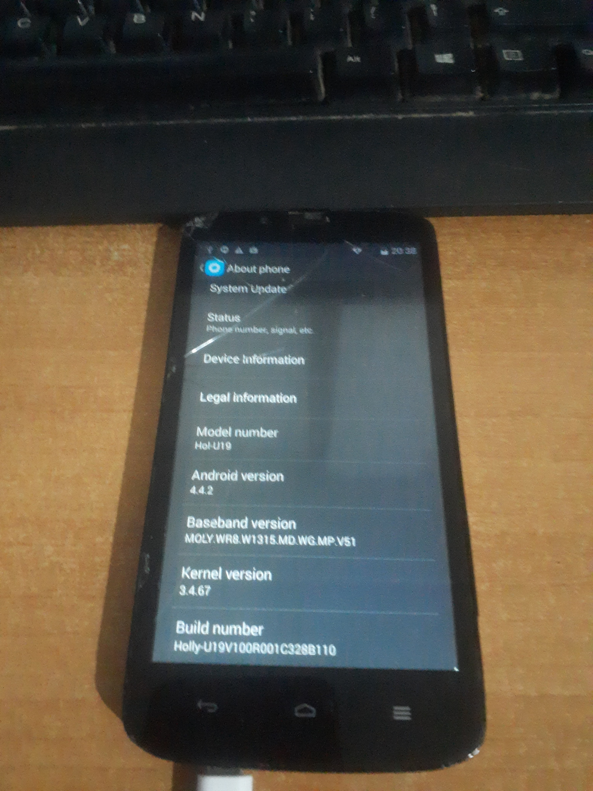

Huawei Honor Holly/3C Lite (huawei-holly)
This device is marked as not booting.
Status: "Kernel doesn't compile."
Status: "Kernel doesn't compile."
|
 Huawei Honor Holly running EMUI 2.3 in About Phone page. | |
| Manufacturer | Huawei |
|---|---|
| Name |
Honor Holly/ Honor 3C Lite |
| Codename | huawei-holly |
| Model | Hol-U19 |
| Released | 2014 |
| Type | handset |
| Hardware | |
| Chipset | MediaTek MT6582 |
| CPU | Quad-Core (4x 1.3 GHz Cortex-A7) |
| GPU | Mali-400MP2 |
| Display | 720x1280 |
| Storage | 16GB |
| Memory | 1GB |
| Architecture | armv7 |
| Software | |
| Original software | Android (EMUI) |
Original version
The version the device was shipped with.
|
4.4.2 |
| FOSS bootloader | partial |
| postmarketOS | |
Mainline
Instead of a Linux kernel fork, it is possible to run (Close to) Mainline.
|
yes |
{kind=link}
|
This device is based on the MediaTek MT6582. See the SoC page for common tips, guides and troubleshooting steps |
| Throughout this wiki page, all 1st person pronouns refer to Rock Pie (the writer of this page). |
Contributors
Users owning this device
- Rock Pie (Notes: Has a kind of broken touchscreen but otherwise works fine.)
Unlocking the bootloader
Isn't necessary as the bootloader is pre-unlocked, at least for me
How to enter flash mode
Fastboot
1. Hold while powering on the device or connecting it to a computer. 2. Select the second option (labeled "[Fastboot Mode]" by pressing once then .
MediaTek Preloader
Plug the phone into a computer while SP Flash Tool is running.
Boot ROM
Plug the phone into a computer while holding while MTKClient is running.
Installation
No
UART
{kind=link}
Hardware
| Component | What it is |
|---|---|
| SoC | MediaTek MT6582 |
| eMMC/RAM | Samsung KMK8X000VM-B412 |
| Power management IC | MediaTek MT6323GA |
| Power amplifier(?) | AIROHA AP6693 |
| Connectivity IC | MediaTek MT6166V |
| Motherboard | AT803_MB_PCB_V2.0 |
| Wi-Fi/Bluetooth/FM/"IPD" chip | MediaTek MT6627N |
| Ambient light sensor | AMS TMD2772 |
| Magnetometer | AKM09911 |
| Touchscreen | Goodix GT9xx |
| Display panel(??) | nt35521_hd720_dsi_vdo_dijing |
Partitions
Source for some of the items in the table: https://gist.github.com/sadiqsalau/865364b344c0b9cb1b418df8bbb51804
| Partition | Purpose (mountpoint) |
|---|---|
| /dev/block/mmcblk0p1 (aka /emmc@ebr1) | "Ext4 file system partition index table" (None) |
| /dev/block/mmcblk0p2 (aka /emmc@protect_f) | "SIM lock" (no mountpoint) |
| /dev/block/mmcblk0p3 (aka /emmc@protect_s) | "SIM lock backup" (no mountpoint) |
| /dev/block/mmcblk0p4 (aka /emmc@sec_ro) | "Reserved for the security platform used" (no mountpoint) |
| /dev/block/mmcblk0p5 (aka /emmc@android) | System partition (/system) |
| /dev/block/mmcblk0p6 (aka /emmc@cache) | Cache partition (/cache) |
| /dev/block/mmcblk0p7 (aka /emmc@usrdata) | User data partition (/data and /sdcard) |
| /dev/bootimg (BOOTIMG) | Boot partition (none) |
| /dev/recovery (RECOVERY) | Recovery partition (doesn't support flashing with fastboot) (none) |
| /dev/logo (LOGO) | Logo (none) |
| /dev/uboot (UBOOT) | First-stage bootloader, by default it's LK. (none) |
| /dev/preloader (PRELOADER) | Preloader |
Notes
-
fastboot bootdoes not work.
Output of Fastboot:
LAPTOP-Q4E3R03:~$ sudo fastboot boot boot.img Sending 'boot.img' (5844 KB) OKAY [ 0.244s] Booting
Output of device:
USB Transferring... USB Transmission OK Time:192ms Vel:9116KB/s
Then the phone gives up. Further fastboot commands should be able to be issued.
- Even though ro.build.product in the phone's stock ROM's build.prop is "huaqin82_wet_b2b_kk" and ro.build.device is "HWHol-U" which should've been the codename, the vendor and device trees for the phone use "holly" as the codename, which is why I used that to refer to the device by codename.
- This phone is also known as the Huawei Honor 3C Lite
- The Honor Holly can run the China-exclusive Honor 3C Play Edition's ROMs.
-
Honor Holly running Honor 3C Play Edition stock ROM
{kind=link}